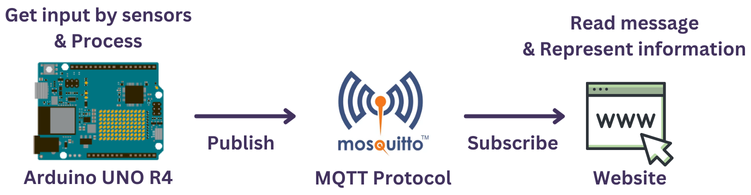
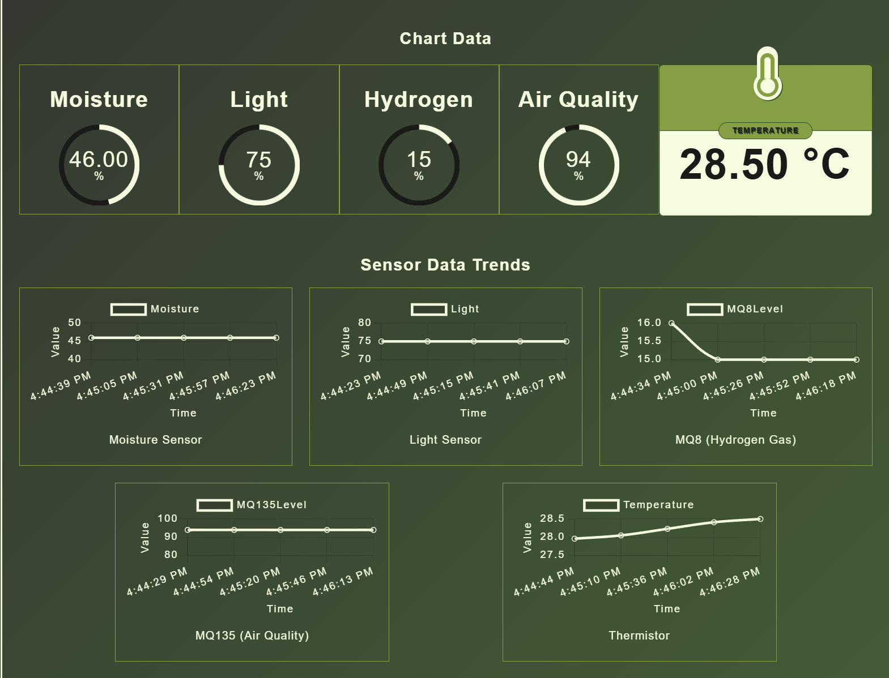

Project นี้ต้องการแก้คือ การจัดการดูแลพืชในฟาร์มขนาดใหญ่หรือฟาร์มที่มีพืชหลายชนิดอย่างมีประสิทธิภาพ ซึ่งมักมีความยุ่งยากในการติดตามสถานะสุขภาพของพืชแต่ละต้น เช่น การรดน้ำ ปริมาณสารอาหาร อุณหภูมิ ความชื้น หรือความต้องการแสงแดดในแต่ละชนิด ปัญหานี้มักเกิดจากการดูแลแบบทั่วไปที่ไม่มีระบบอัตโนมัติ ทำให้เกษตรกรไม่สามารถตรวจสอบพืชทุกต้นได้อย่างแม่นยำตลอดเวลา
Arduino® UNO R4 WiFi รับข้อมูลด้วย Sensors จากสภาพแวดล้อม ณ บริเวณพืช เพื่อนำไปประมวลผล
ทำการประมวลผลข้อมูลจากเซ็นเซอร์ที่ได้รับจากสภาพแวดล้อมของพืช แล้วส่งข้อมูลผ่านทาง WiFi โดยใช้โปรโตคอล MQTT และแสดงผลขึ้นบนหน้าเว็บ
แสดงข้อมูลที่วัดได้แบบเรียลไทม์จากจุดติดตั้ง Arduino® UNO R4 พร้อมเซ็นเซอร์ ข้อมูลถูกส่งขึ้นเว็บไซด์เพื่อการรายงานผลอย่างแม่นยำและต่อเนื่อง ผู้ใช้งานสามารถตรวจสอบและติดตามสถานะได้ตลอดเวลาในรูปแบบเรียลไทม์
66070112
66070082
66070083